This is really just a list of places where I've lived, together with a note about each and perhaps a photo if one is available. Naturally I'll start at the beginning and work through in chronological order. I was born in North Middlesex Hospital in Edmonton. I think the hospital still exists, but the county of Middlesex was mainly absorbed by Greater London in 1965.
| Alpha Road, Edmonton |
|---|
| 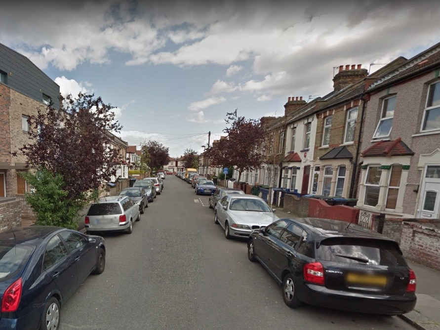I can remember my grand parents living in Alpha Road when I was a boy, but it seems that when I was born my parents had a flat in one of the houses in Alpha Road. It was a street of mainly terraced Victorian houses and I believe that we had an upstairs flat in one of them. It seems that the owner of the house got married and his wife did not want tenants, so took us to court to get us evicted. |
| Whitefield Road, Cheshunt, Hertfordshire |
| 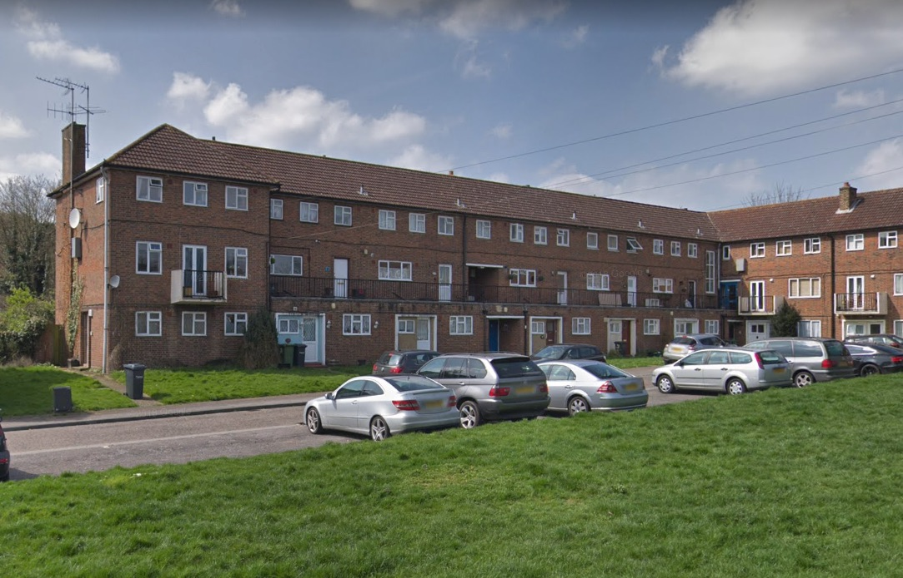I can only assume that we moved from Alpha Road to a 'council house' in Cheshunt. Certainly I started school in Cheshunt and my brother Alan was born there. We had a maisonette in the form of the top two floors in a three story block. My only real recollection of the place is that it had a tiled floor. We had pet mice, which would escape and go under the sofa. So we would use a long broom handle to slide them across the floor into someone's waiting hands. |
| Chalton Road, Edmonton |
| 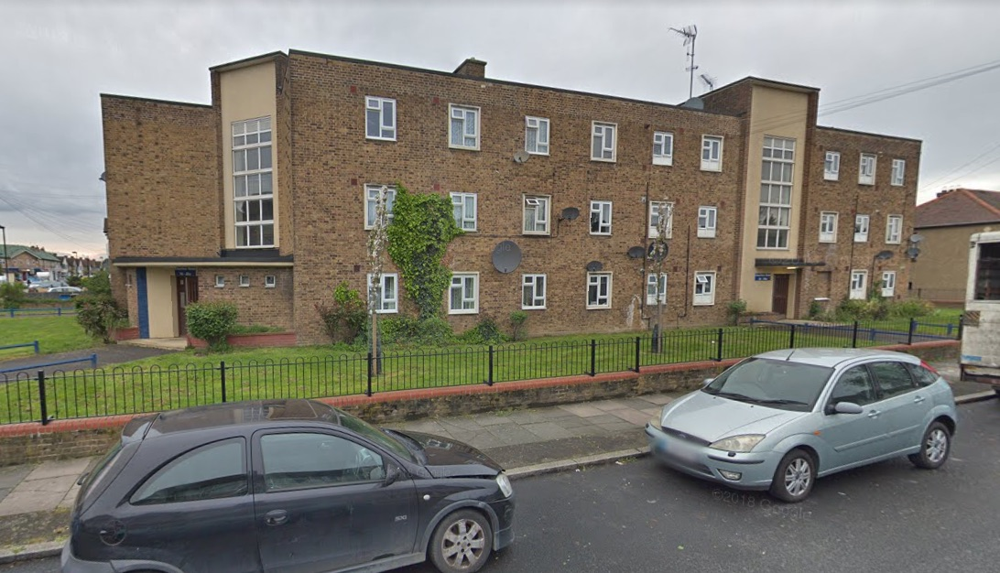Cheshunt was a pleasant place, but walking anywhere locally generally meant crossing a busy road, it was a long way from where Dad was working and Mum felt it was also a long way from her mother in Edmonton. So we arranged for a transfer to a first-floor council flat in Edmonton. Again memories are scant, but I do recall playing with friends, building model aircraft from Kielcraft kits with Dad, flying them from the window and them crashing into the communal washing line posts below. I also remember my Mother taking Alan to the shops (in his pram) and leaving me alone at home. This frightened me (and was probably illegal, even at that time) until I was bought jigsaw puzzles to do while she was out. |
| 34 Ashwood Road, Potters Bar, Hertfordshire |
| 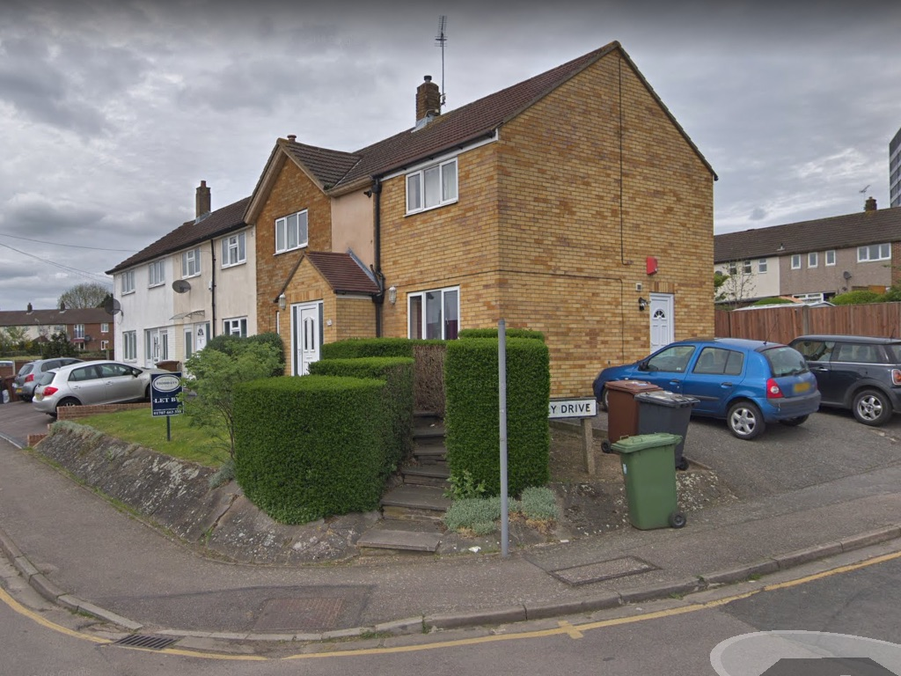It's probably true to say that most of my upbringing took place here. When we lived here there was no extension on the end, it was just a two-bedroom end of terrace house, and there was an old oak tree where the blue car in the photo is now. Dad planted the privit hedge up both sides of the steps, mainly to prevent people cutting the corner off by leaping up or down the front wall and walking across the steps. The previous occupants had lived in the same block of flats as us in Edmonton and wanted to move back. Since this house was on the Edmonton council estate we were able to do an exchange. I must have been eight or nine when we moved here and stayed until I was 18 and went to university.
Later, after Alan and I were married and in our own houses, the Conservative government introduced a 'right to buy' policy for council tennants. We may not have agreed with the policy, but we persuaded Mum and Dad to buy the house at a very discounted price. |
| 10 Clark Street, Morecambe, Lancashire |
| In September 1969 I took up temporary residence in a guest house in Morecambe for my first year at university. I had travelled to Morecambe by train, carrying my worldly possesions, or most of them. One item I didn't take, for some reason, was my briefcase, so I wrote home asking them to send it to me. Then this very heavy parcel arrived. My Mother had put a large bread pudding inside the briefcase! I think Mrs A (our landlady) took this as a reflection on her cooking. All sharing one bathroom meant that, when possible, I would use a shower that for some reason was in the physics department. |
| 24A Clarendon Road, Morecambe, Lancashire |
| 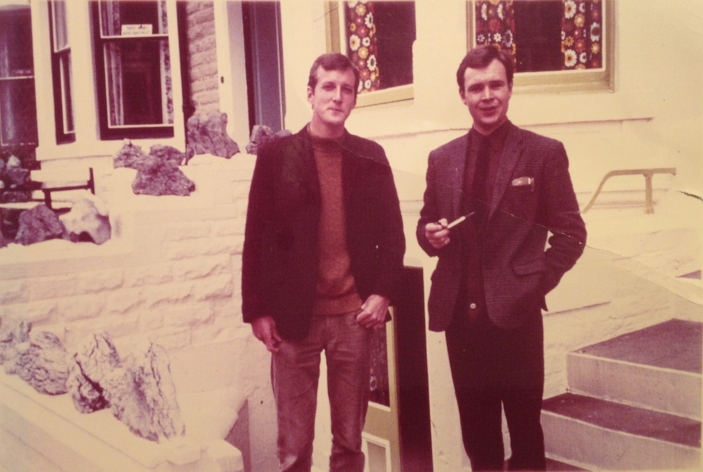Being in Clark Street enabled us to find our feet, travelling by bus into Lancaster each day. However, living in your own (rented) flat was much more appealing. So three of us (Dick, Paddy and I) found a basement flat in a house in a Victorian terrace. There were three flats and we had to share a bathroom on the second floor. I played hockey and squash quite often so I would use the showers in the sport centre. I had worked during the summer vacation and saved up enough to buy a car which, during cold spells, spent most of its time parked in the road. We stayed in that flat for two years, with Paddy deciding to move out after a while, which suited Dick and I fine. The photo shows Dick and I standing at the top of the steps that led down to the front door of Flat A. The walls were actually white, but it is an old photo. |
| 7 Melbourne Lane, Breedon-on-the-Hill, Derbyshire |
| Then, in September 1969, it was time for work. I'd turned down two offers of a PhD place at Lancaster and a place on a nuclear engineering MSc couse at Birmingham University and accepted an offer as a graduate apprentice at Rolls Royce and Associates (designers of nuclear submarine power plants) in Derby. So for a short time I was back in digs, a short drive out of Derby. Prim and Bill(?) were a very pleasant couple and we more or less shared their house with them. |
| The Royal Navel College, Greenwich |
| After Christmas our small band of graduate apprentices (five of us) were sent on a course at the navel college. The course was to teach sub-mariner officers, who would be working at the front end of a nuclear submarine, what went on at the back end, that is the reactor and propulsion systems. So for about three months we ate our meals in the painted hall, served by white-gloved waiters and attended some splendid formal dinners and a ball. |
| 14 Brackens Lane, Alverston, Derby |
| Then it was back to Derby and, after a short stay in a guest house, four of us (Colin Welsh, John Starkey, Chris Williams and I) rented a house for a year, not too far from where we were working. I had thought of buying a house, since they were very cheap in that area, but it was so easy to rent. |
| 37 Wilmington Avenue, Alveston, Derby |
| Just around the corner we discoverd a new development, run by a housing association. People could rent a house from the association and later buy the house if they wanted. Three of us (we couldn't live with Chris any more) were only interested in renting, but laid turf in the small back garden, built a bookcase from bricks and planks of wood and I painted the floorboards around a carpet square in my bedroom. This house was unfurnished, so we had to aquire furniture from our parents or wherever. It was while living here that I met Angela, who was living in a shared flat in Litchfield, about three quarters of an hour drive away. When I moved out, my place was taken by John Taylor. |
| Flat 1, 115 Mill Hill Lane, Derby |
| We married on August 5th 1972 and had decided to by a new-build house in Little Eaton. However, the build was late. In fact, at one point the build went backwards. We would go to the site each weekend and one week found that the stairs, that were installed the week before, had been removed. So we needed to find some temporary accommodation. We found a flat in one of the back streets of Derby. The house was being converted into flats by a hard-working Eastern European gentleman who was doing most of the work himself. We moved in on July 24th and stayed there until our house in Little Eaton was complete. |
| Plot 4 Barley Close Terrace, Little Eaton, Derbyshire |
| 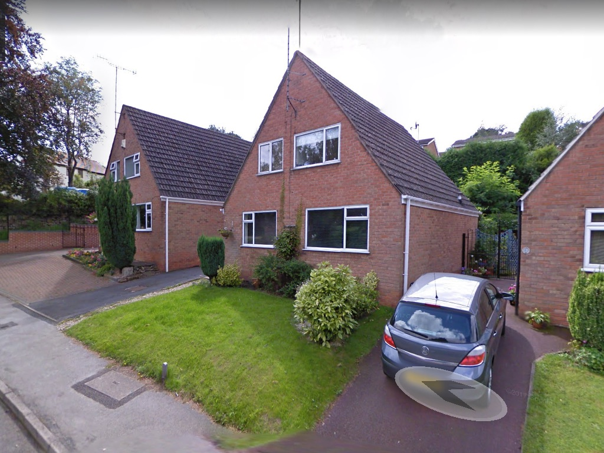On Saturday 18th November 1972 we moved into Plot 3, Barley Close Terrace. The photo, courtesy of Google Streetview, looks very much as it did when we moved out in 1976. It was quite a large house, with a garage, for our first house. Although it was on a small plot, we had a large sitting room at the back, a large dining room at the front and another room at the front, downstairs, that I used as a workshop. Upstairs there were three bedrooms. The back garden was very steep (upwards) and at some time in the future the developer would build a row of houses behind us. We would have been very overlooked when that was done. At that age we were quite enthusiastic. We laid a 'floating' wooden floor in the sitting room and terraced the small, steep back garden using sandstone rocks salvaged from the building site. I also salvaged a large wooden plank (a first floor joist) that made the top of a work bench that we still have. We also bought the teak boxes that we still have on our sitting room wall. |
| 31 Highfield Road, Lymm, Cheshire |
| 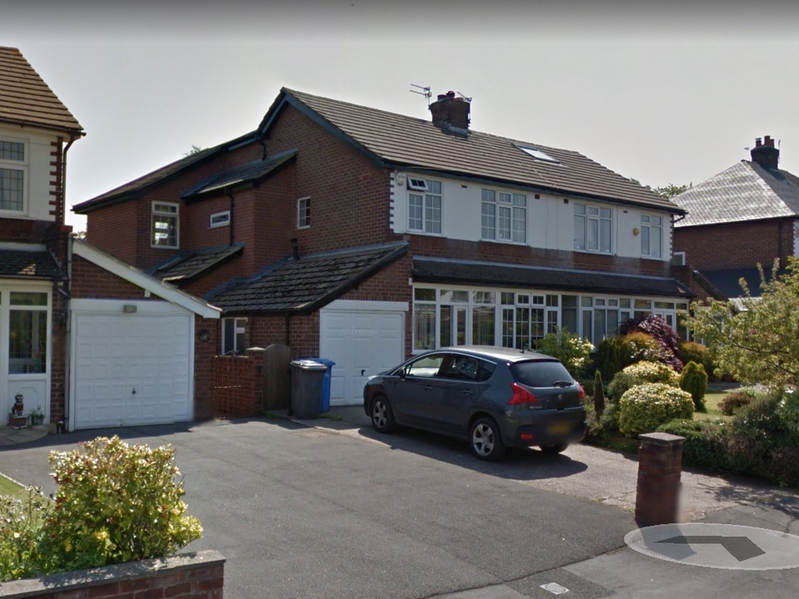After yet another submarine reactor design contract was cancelled I looked for a job in the civil nuclear raactor field. I didn't get a job with the UK Atomic Energy Authority, but I did with the National Nuclear Corporation (which might have been called the Nuclear Power Company at the time), who were designing the next generation of civil reactors. So we moved from Derbyshire to Cheshire. I can't remember anything about the sale of our house in Little Eaton, but, having decided that we would like to live in Lymm, buying the house we wanted took some time. In fact we had to move into a rented house in Woolston (58 Lyndon Close), on the eastern edge of Warrinton on Friday 17th October. I started work at NNC on the Monday. The owners of 31 Highfield Road were having difficulty purchasing the house (also in Lymm) that they wanted to buy. Anyway we moved into Highfield Road on Monday 2nd February. The photo is again courtesy of Google Streetview. The house certainly didn't have the large extention on the back when we lived there. The kitchen was a single storey room on the back of the house and we added a small extention with a downstairs toilet. I did a complete refit of the kitchen, including replacing the oil-fired boiler with a wall-mounted gas boiler. Later I laid another wooden floor, this time in the dining room, which ran across the back of the house, between the hall and the kitchen. Both Victoria and Paul were born here. |
| Hillcrest, 7 Mountain Road, Llanllechid, Gwyneth, North Wales |
| 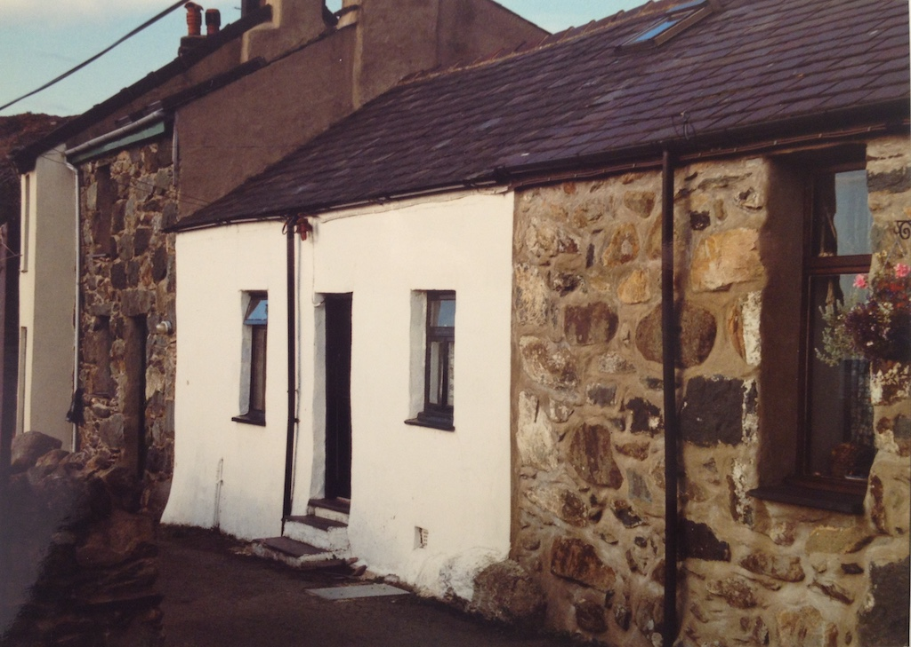This one is slipped in here, not because it was our main home, but because in early 1979, just before Paul was born, we bought a somewhat dilapidated cottage in North Wales. On 10th October, during a long weekend in Wales, we found and made an offer on Hillcrest, Mountain Road, LLanllechid. When we bought it the front wall was a rusty red colour and the roof was almost white from the cement grouting that had been poured on it to hold the slates in place. However, Mountain Road was at the top of Llanchlechid (also known as Rachub), in land from Bangor and had views out over the coastal strip, the Menai Straights and Anglesea. The long garden, sloping down the hill, was on the other side of the single-track road. As we walked down Mountain Road towards the cottage I thought we had made a big mistake. It was only that the owner was standing outside and saw us coming that we carried on. However, when we walked inside it was a different matter. The main room was open up into the roof, which was boarded, with a small room to the right, narrow, steep stairs up to a 'crog loft' and a more modern kitchen and bathroom at the back. Yes, it did have large flowered wallpaper on the uneven walls of the living room and the wallpaper in the kitchen was held up by wooden battens nailed to the wall, but we spent 15 years enjoying holidays in Noth Wales and rennovating the cottage. However, when we moved to Sussex it was too far to travel frequently, so we sold the cottage. Both Angela and I still miss it, even after 25 years. |
| 44 Higher Lane, Lymm, Cheshire |
| 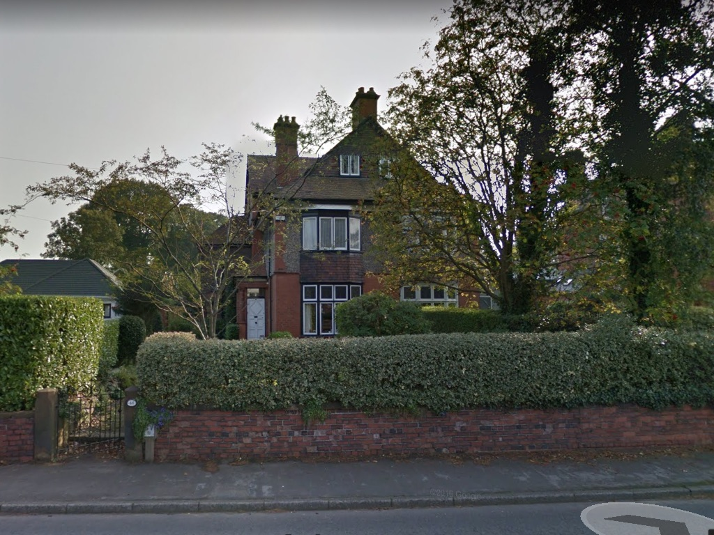On Friday 2nd August 1985 we moved to a three-story Victorian house with a cellar. I can't remember why we decided to move, but we started updating it from the ground floor up. It had a morning room and a kitchen/scullery (with a walk-in larder) and a coal-fired AGA in the morning room. We had the AGA converted to gas and a bespoke kitchen (made out of elm) installed in the morning room. We had decorated the ground floor and first floor before we moved, although we had thoughts of putting an en-suite in our large bedroom. |
| 5 Kingsmead Close, Bramber, Steyning, West Sussex |
| 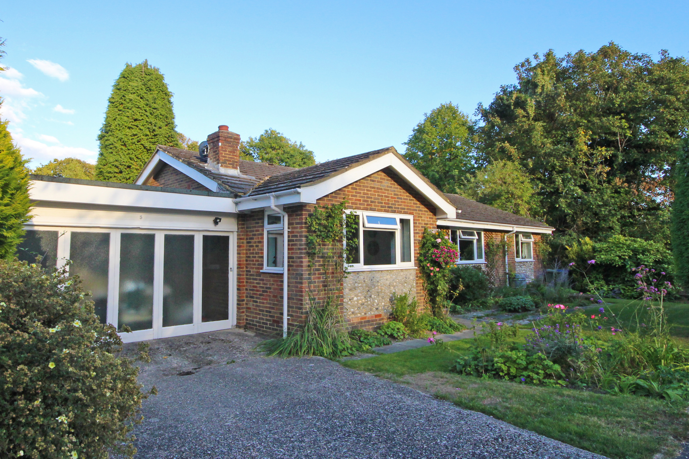Problems at work caused me to look for another job and I found one with a small systems house in Crawley, but that meant a big upheaval for the family. Paul was about to move to the secondary school and Victoria was about to move from the lower to upper secondary school. There is probably never a good time to move your family, but at least some things helped. I started work in April 1990, staying in temporary accomodation (digs and then a house share) and we moved into Kingsmead Close on Wednesday 27th June. Moving from a three-storey Victorian house to a 1960s bungalow wasn't realy our plan, it was just the biggest house we could afford. Our plan was to stay there for about two years and then find something that we liked. However, we stayed for 29 years! We never really got to like the house, but the location was excellent. We were in a cul-de-sac next to some woodland and within walking distance of schools and shops. |
| 31 Penlands Vale, Steyning, West Sussex |
| 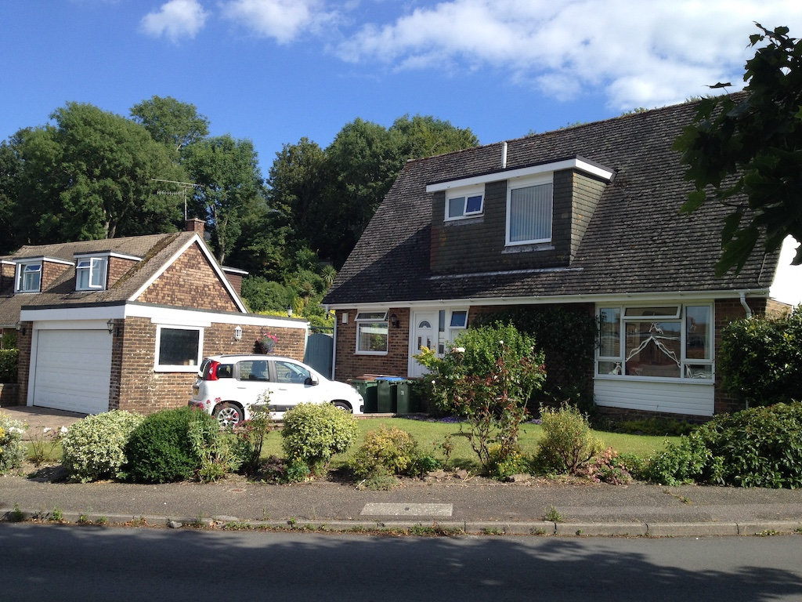For a number of years we had been talking about downsizing. Although you could 'shut off' rooms in the house, the garden seemed to take more and more effort. I'm not sure Angela was very keen on the idea, but I wanted to buy a small piece of land and have a house built. A small house that would be individual and have as light a footprint as possible. However, although we could have moved anywhere (as long as it was reasonably close to an airport) we preferred to stay in the area. We hadn't been seriously looking and had not viewed any houses, but in September of 2018 a friend of Angela's told us that a small house with a large garage was coming on the market near them. It was a 1970s A-frame house (otherwise known as a 'toblerone' house) on the edge of a fairly large housing estate in Steyning, neither of which we really wanted. Any way, we thought we should look at it and before we knew what had happened we had made an offer on it and put our house in Kingsmead Close up for sale! It wasn't until April 30th 2019 that we moved in, due to one buyer pulling out. However, the Penlands Vale house was a probate sale and the owners probably wouldn't have got as good a price if they had put it back on the market. Before we exchanged contracts we went back to check it over and realised just how small it was! We had about three rounds of disposing of furniture and other stuff, to charities and the tip, but still had too much stuff. Surprisingly we fitted in quite well and it is only a ten minute walk to the High Street. |